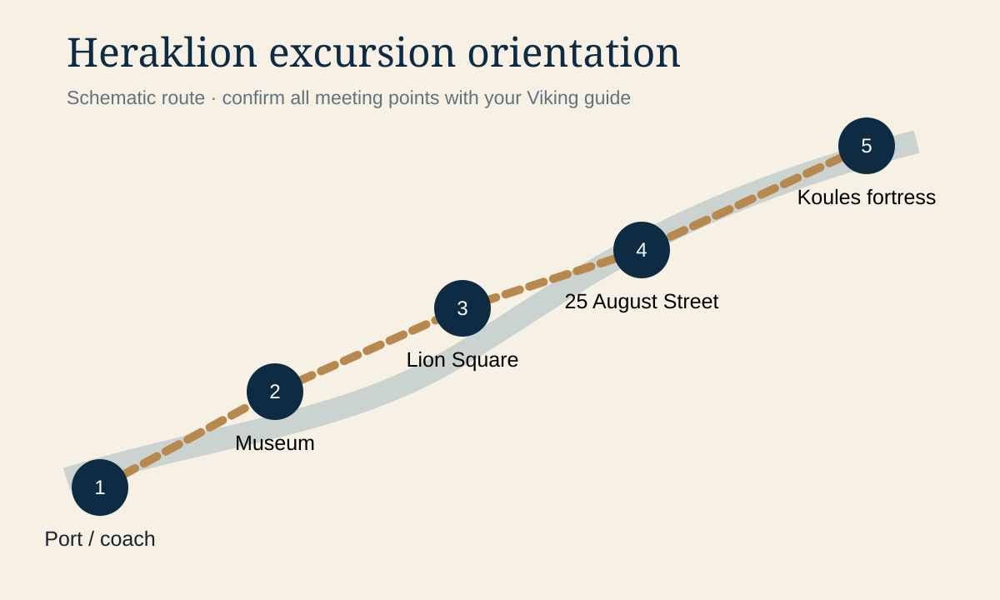

Heraklion orientation chapters
Heraklion orientation map
Tap the map to enlarge it. This schematic emphasizes the excursion sequence rather than street-by-street navigation.

Excursion core
Port transfer → Archaeological Museum → city orientation → return logistics.
Optional extension
Lion Square and Koules only when the guide confirms sufficient free time.